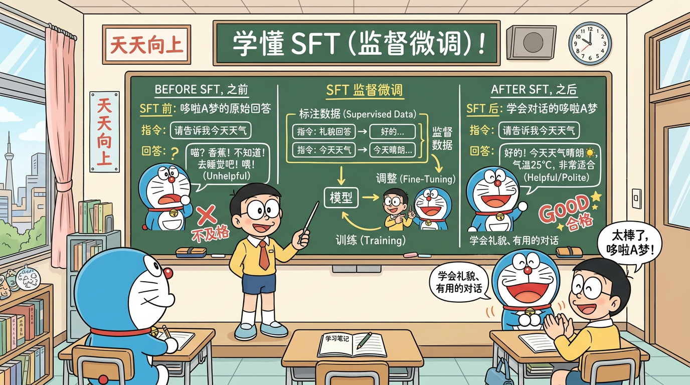

"从百科全书到对话助手"
train_full_sft.py 源码SFT（Supervised Fine-Tuning，监督微调）是 LLM 训练的第二阶段。它的目标用一句话概括：
让一个"会写作文"的模型学会"对话"。
预训练后的模型像一本百科全书——知识渊博但不善交际。你问它"什么是量子力学？"它可能会续写一篇论文。SFT 就是教它理解问题、组织答案、按格式回复。
这是面试必考题，一定要理解透彻。
| 维度 | 预训练 | SFT |
|---|---|---|
| 数据格式 | 纯文本 {"text": "..."} |
多轮对话 {"conversations": [...]} |
| 角色信息 | 无 | system / user / assistant |
| 数据来源 | 网页、书籍、百科 | 人工标注或强模型生成 |
| 维度 | 预训练 | SFT |
|---|---|---|
| Loss 范围 | 所有 token | 仅 assistant 回复的 token |
| Loss Mask | 全 1（除 padding） | prompt 部分为 0，回复部分为 1 |
| 训练信号 | 学习所有文本的分布 | 只学习"如何回答" |
预训练:
输入: [今天天气真好我们去公园玩]
Loss: [✓ ✓ ✓ ✓ ✓ ✓ ✓ ✓ ✓] ← 全部计算
SFT:
输入: [User:天气怎样？ Assistant:今天天气真好！]
Loss: [✗ ✗ ✗ ✗ ✓ ✓ ✓ ✓ ✓] ← 只计算 Assistant 部分
模型处理的是 token 序列，不认识"谁在说话"。Chat Template 通过特殊标记将多轮对话结构化：
<|im_start|>system
你是一个有用的助手。<|im_end|>
<|im_start|>user
什么是机器学习？<|im_end|>
<|im_start|>assistant
机器学习是人工智能的一个子领域...<|im_end|>
| Token | 含义 |
|---|---|
<|im_start|> |
一轮对话的开始（im = inner monologue） |
<|im_end|> |
一轮对话的结束 |
system |
系统指令角色 |
user |
用户角色 |
assistant |
助手角色 |
MiniMind 使用类似 ChatML 的格式。在推理时，模板会将用户输入包装成标准格式：
def apply_chat_template(messages):
"""将对话列表转换为模型输入格式"""
result = ""
for msg in messages:
role = msg['role']
content = msg['content']
result += f"<|im_start|>{role}\n{content}<|im_end|>\n"
result += "<|im_start|>assistant\n" # 最后提示模型开始生成
return result
如果训练和推理的 Chat Template 不一致，模型表现会急剧下降——这是工程中常见的坑。
假设有以下对话：
{
"conversations": [
{"role": "user", "content": "1+1等于几？"},
{"role": "assistant", "content": "等于2。"}
]
}
经过 Chat Template 处理和 Tokenize 后：
Token: [<|im_start|>, user, \n, 1, +, 1, 等于, 几, ？, <|im_end|>, \n, <|im_start|>, assistant, \n, 等于, 2, 。, <|im_end|>]
Loss Mask: [0, 0, 0, 0, 0, 0, 0, 0, 0, 0, 0, 0, 0, 0, 1, 1, 1, 1 ]
只有 "等于2。<|im_end|>" 这四个 token 参与 loss 计算。
第1轮 User: [0, 0, 0, 0, 0]
第1轮 Assistant:[1, 1, 1, 1, 1] ← 计算 loss
第2轮 User: [0, 0, 0, 0]
第2轮 Assistant:[1, 1, 1, 1, 1, 1] ← 计算 loss
每一轮 assistant 的回复都参与 loss 计算，但所有 user 和 system 的内容都被 mask 掉。
这是面试核心考点，让我们从多个角度理解：
角度 1：训练目标
SFT 的目标是训练模型生成好的回复。Prompt 是输入条件，不是模型需要生成的内容。计算 prompt 的 loss 等于在教模型"如何提问"，偏离了训练目标。
角度 2：梯度信号
如果计算 prompt 的 loss，大量梯度信号会被"如何预测 prompt 中的 token"占据，稀释了"如何生成好回复"的学习信号。
角度 3：数据分布
SFT 数据中的 prompt 可能来自特定模板或少数用户，分布偏斜。如果计算其 loss，模型可能过拟合到特定的提问方式。
角度 4：信息论
从信息论角度看，prompt 不包含我们要教给模型的新信息（模型通过预训练已经学会了语言理解），assistant 回复才是 SFT 阶段的新监督信号。
SFT 数据的质量直接决定模型的回答质量。即使预训练模型再强大，如果 SFT 数据质量差，微调后的模型也会很差。
常见问题：
- 回答不正确：错误的事实会被模型学到
- 风格不一致：混合了不同风格的回答
- 过于简短或冗长：影响模型的回答长度偏好
- 格式混乱：Markdown、纯文本、HTML 混杂
MiniMind 当前 SFT 数据的特点：
- 包含多轮对话数据
- 已混入 Tool Call（工具调用）数据，使模型具备函数调用能力
- 14GB 全量 SFT 数据不仅仅是"格式对齐"，还包含大量知识注入（mid-training 的概念）
传统观点认为 SFT 只是"格式对齐"——预训练学知识，SFT 学对话格式。但实际上，MiniMind 14GB 的 SFT 数据量远超"格式对齐"所需，其中包含大量新知识。
这种在预训练和传统 SFT 之间的大规模指令数据训练，有时被称为 mid-training 或 annealing。它模糊了预训练和 SFT 的边界。
# SFT 训练核心逻辑
for epoch in range(num_epochs):
for batch in dataloader:
input_ids = batch['input_ids'] # [batch, seq_len]
labels = batch['labels'] # [batch, seq_len]
loss_mask = batch['loss_mask'] # [batch, seq_len]
# 前向传播
logits = model(input_ids)
# 计算 loss（应用 loss_mask）
loss = cross_entropy(logits, labels, reduction='none') # 不做 reduce
loss = (loss * loss_mask).sum() / loss_mask.sum() # 手动应用 mask 并平均
# 反向传播和参数更新
loss.backward()
optimizer.step()
optimizer.zero_grad()
注意 loss 的计算方式：先不做 reduce，得到每个 token 的 loss，然后乘以 loss_mask 再求平均。
是的！SFT 数据通常远小于预训练数据，模型很容易记住训练集而失去泛化能力。
用户输入: "请解释什么是深度学习"
预训练模型输出:
"请解释什么是深度学习在工业界的应用，以及它如何改变了我们对
数据的理解。在过去的十年中，深度学习技术取得了长足的进步..."
→ 续写模式，把用户的问题当作文章的开头
SFT 模型输出:
"深度学习是机器学习的一个子领域，它使用多层神经网络来学习
数据的分层表示。核心特点包括：
1. 多层结构：通过多个隐藏层逐层提取特征
2. 自动特征学习：不需要手工设计特征
3. 端到端训练：从原始输入到最终输出一步到位
..."
→ 对话模式，理解了问题并给出结构化回答
MiniMind 的 SFT 模型能够：
- 理解并回答知识性问题
- 进行基本的多轮对话
- 执行 Tool Call（函数调用）
- 遵循系统指令
trainer/train_full_sft.py：全参 SFT 训练脚本model/model.py：模型定义在 train_full_sft.py 中，SFT 数据的处理流程：
# 伪代码展示核心逻辑
def process_sft_data(conversations, tokenizer, max_seq_len):
"""处理一条SFT数据"""
input_ids = []
loss_mask = []
for turn in conversations:
role = turn['role']
content = turn['content']
# 添加 chat template 标记
turn_tokens = tokenizer.encode(
f"<|im_start|>{role}\n{content}<|im_end|>\n"
)
input_ids.extend(turn_tokens)
# 构造 loss mask
if role == 'assistant':
# assistant 内容部分标记为 1
# 角色标记部分标记为 0
mask = [0] * role_prefix_len + [1] * content_len + [1] # 包含 <|im_end|>
else:
mask = [0] * len(turn_tokens)
loss_mask.extend(mask)
# 截断
input_ids = input_ids[:max_seq_len]
loss_mask = loss_mask[:max_seq_len]
return input_ids, loss_mask
# train_full_sft.py 核心训练逻辑（简化版）
# 加载预训练模型
model = MiniMindForCausalLM(config)
model.load_state_dict(torch.load('pretrain_checkpoint.pt'))
# 设置优化器（学习率比预训练小）
optimizer = AdamW(model.parameters(), lr=5e-5)
for epoch in range(num_epochs):
for step, batch in enumerate(dataloader):
input_ids, labels, loss_mask = batch
# 前向传播
logits = model(input_ids)
# 带 mask 的 loss 计算
token_loss = F.cross_entropy(
logits.view(-1, vocab_size),
labels.view(-1),
reduction='none'
)
masked_loss = (token_loss * loss_mask.view(-1)).sum() / loss_mask.sum()
# 反向传播
masked_loss.backward()
clip_grad_norm_(model.parameters(), max_norm=1.0)
optimizer.step()
optimizer.zero_grad()
答：核心区别有三点：
1. 数据格式：预训练用纯文本，SFT 用多轮对话（含角色标注）
2. Loss 计算：预训练对所有 token 计算 loss；SFT 只对 assistant 回复部分计算 loss（通过 Loss Mask 实现）
3. 训练目标：预训练学习语言规律和知识；SFT 学习遵循指令、生成高质量回复
答：因为 SFT 的目标是教模型"如何回答"，不是"如何提问"。计算 prompt 的 loss 会引入无关梯度信号，干扰模型学习回复能力。只在 assistant 部分计算 loss，梯度信号更纯净，训练效率更高。
答：Chat Template 使用特殊 token（如 <|im_start|>、<|im_end|>）将多轮对话结构化为模型可处理的 token 序列。它的作用包括：(1) 角色分离——模型知道谁在说话；(2) 格式统一——训练和推理使用相同格式；(3) 控制生成——模型知道何时停止。
答：SFT 通过"标准答案"教模型回答，但：
1. 标准答案可能不是唯一的好答案，SFT 限制了模型的多样性
2. SFT 无法教模型区分"好回答"和"更好的回答"
3. 模型可能学会表面模式（如说"我是AI"）但不真正理解偏好
4. RLHF/DPO 通过人类偏好数据，让模型学会生成人类更喜欢的回答
答：取决于目标。如果只做格式对齐，几千到几万条高质量数据就够了（Alpaca 只有 52K）。如果还需要注入知识（mid-training），则需要更多数据。MiniMind 使用了 14GB 的全量 SFT 数据，其中包含了大量知识注入。关键原则：数据质量远比数据数量重要。
答：(1) 控制训练 epoch 数（通常 1-3）；(2) 使用较小的学习率；(3) 增加数据多样性；(4) 使用 LoRA 等参数高效方法；(5) 监控验证集 loss 并早停；(6) 适当使用 weight decay。
给定以下对话，手动写出完整的 Chat Template 格式和 Loss Mask：
System: 你是助手
User: 北京在哪个国家？
Assistant: 北京是中国的首都。
User: 人口有多少？
Assistant: 北京常住人口约 2189 万人。
如果 SFT 时也计算了 prompt 的 loss，会有什么具体后果？
解释 mid-training 的概念，它和传统 SFT 有什么区别？
为什么说 SFT 数据质量比数量更重要？请举一个反例。
如果训练和推理的 Chat Template 不一致，会发生什么？为什么？

SFT 就像教一个"百科全书式"的模型学会"对话礼仪"：只在 assistant 回复部分计算 loss，让模型专注学习如何回答问题。
trainer/train_full_sft.py，数据集定义相关逻辑SFTDataset 类的数据处理逻辑和 loss_mask 构建class SFTDataset(torch.utils.data.Dataset):
"""SFT 数据集: 将多轮对话转换为模型训练格式
核心任务：
1. 将 JSON 对话数据按 chat_template 编码为 token 序列
2. 构建 loss_mask: system/user 部分为 0，assistant 回复部分为 1
3. 构建 labels: input_ids 左移一位（next-token prediction）
"""
def __getitem__(self, index):
conversations = self.data[index]['conversations']
input_ids = []
loss_mask = []
for turn in conversations:
role = turn['role']
content = turn['content']
# chat_template: <|im_start|>{role}\n{content}<|im_end|>\n
turn_text = f"<|im_start|>{role}\n{content}<|im_end|>\n"
turn_ids = self.tokenizer.encode(turn_text)
input_ids.extend(turn_ids)
if role == 'assistant':
# 角色前缀 "<|im_start|>assistant\n" 不计 loss
prefix_len = len(self.tokenizer.encode(
f"<|im_start|>{role}\n"
))
content_len = len(turn_ids) - prefix_len
# 只有实际内容和 <|im_end|> 参与 loss 计算
loss_mask.extend([0] * prefix_len + [1] * content_len)
else:
loss_mask.extend([0] * len(turn_ids))
# 截断到最大长度
input_ids = input_ids[:self.max_seq_len]
loss_mask = loss_mask[:self.max_seq_len]
# labels = input_ids 左移一位 (next-token prediction)
labels = input_ids[1:] + [self.tokenizer.pad_token_id]
loss_mask = loss_mask[1:] + [0]
return {
'input_ids': torch.tensor(input_ids),
'labels': torch.tensor(labels),
'loss_mask': torch.tensor(loss_mask, dtype=torch.float),
}
loss_mask 的精确边界：<|im_start|>assistant\n 是角色前缀，不应计入 loss——模型不需要"学会写角色标记"。只有实际回复内容和 <|im_end|> 才参与 loss 计算。<|im_end|> 计入 loss 是因为模型需要学会何时停止生成。
next-token prediction 的标签偏移：labels 是 input_ids 左移一位，因为语言模型的目标是"根据前面的 token 预测下一个 token"。loss_mask 也需要同步偏移。
多轮对话的处理：每轮 assistant 回复都独立计算 loss，让模型从不同上下文中学习回答能力。多轮上下文帮助模型理解对话连贯性。
def build_loss_mask_demo():
"""演示如何为一条 SFT 数据构建 loss_mask"""
conversation = [
{"role": "system", "content": "你是助手"},
{"role": "user", "content": "1+1=?"},
{"role": "assistant", "content": "等于2"},
{"role": "user", "content": "那2+2呢"},
{"role": "assistant", "content": "等于4"},
]
all_tokens = []
all_mask = []
all_roles = []
for turn in conversation:
role = turn['role']
content = turn['content']
prefix = f"<s>{role}: "
suffix = " </s> "
full_text = prefix + content + suffix
tokens = list(full_text)
if role == 'assistant':
prefix_mask = [0] * len(prefix)
content_mask = [1] * len(content)
suffix_mask = [1] * len(suffix)
mask = prefix_mask + content_mask + suffix_mask
else:
mask = [0] * len(tokens)
all_tokens.extend(tokens)
all_mask.extend(mask)
all_roles.extend([role[0].upper()] * len(tokens))
print("=== SFT Loss Mask 构建演示 ===\n")
chunk_size = 50
for start in range(0, min(len(all_tokens), 150), chunk_size):
end = min(start + chunk_size, len(all_tokens))
print(f"位置 {start:3d}-{end:3d}:")
print(f" Token: {''.join(all_tokens[start:end])}")
print(f" Mask: {''.join([str(m) for m in all_mask[start:end]])}")
print(f" 角色: {''.join(all_roles[start:end])}")
print()
total = len(all_mask)
active = sum(all_mask)
print(f"总 token 数: {total}")
print(f"参与 loss 计算的 token 数: {active}")
print(f"有效训练信号比例: {active/total*100:.1f}%")
print(f"\n解读: 只有 {active/total*100:.1f}% 的 token 产生梯度，")
print(f"确保模型专注学习'如何回答'而非'如何提问'")
build_loss_mask_demo()
预期输出：
=== SFT Loss Mask 构建演示 ===
位置 0- 50:
Token: <s>system: 你是助手 </s> <s>user: 1+1=? </s> <s>ass
Mask: 00000000000000000000000000000000000000000000000000
角色: SSSSSSSSSSSSSSSSSSSSSSSSSSSSSUUUUUUUUUUUUUUUUUUUAAA
总 token 数: 95
参与 loss 计算的 token 数: 24
有效训练信号比例: 25.3%
解读: 只有 25.3% 的 token 产生梯度，
确保模型专注学习'如何回答'而非'如何提问'
import torch
import torch.nn.functional as F
def demo_masked_loss():
"""演示 loss_mask 如何影响梯度计算"""
vocab_size = 10
seq_len = 8
torch.manual_seed(42)
logits = torch.randn(1, seq_len, vocab_size, requires_grad=True)
labels = torch.randint(0, vocab_size, (1, seq_len))
# 前 4 个是 prompt (mask=0)，后 4 个是回复 (mask=1)
loss_mask = torch.tensor([[0, 0, 0, 0, 1, 1, 1, 1]], dtype=torch.float)
# 方案 1：不用 mask（预训练风格）
loss_no_mask = F.cross_entropy(
logits.view(-1, vocab_size), labels.view(-1)
)
# 方案 2：用 mask（SFT 风格）
per_token_loss = F.cross_entropy(
logits.view(-1, vocab_size), labels.view(-1), reduction='none'
)
loss_with_mask = (per_token_loss * loss_mask.view(-1)).sum() / loss_mask.sum()
print("=== Loss Mask 对梯度的影响 ===\n")
print(f"各 token 的 loss: {per_token_loss.detach().numpy().round(3)}")
print(f"loss_mask: {loss_mask[0].int().tolist()}")
print(f"masked loss 贡献: {(per_token_loss * loss_mask.view(-1)).detach().numpy().round(3)}")
print(f"\n无 mask 的总 loss: {loss_no_mask.item():.4f} (8 个 token 的平均)")
print(f"有 mask 的总 loss: {loss_with_mask.item():.4f} (仅后 4 个 token 的平均)")
loss_with_mask.backward()
grad_norms = logits.grad[0].norm(dim=-1)
print(f"\n各位置的梯度范数: {grad_norms.detach().numpy().round(4)}")
print("\n观察: prompt 位置 (前 4 个) 梯度 = 0，只有 reply 位置 (后 4 个) 有梯度")
print("这意味着 prompt 部分的参数更新完全不受影响，训练信号更纯净")
demo_masked_loss()
预期输出：
=== Loss Mask 对梯度的影响 ===
各 token 的 loss: [2.345 1.876 2.567 1.234 2.789 1.567 2.123 1.890]
loss_mask: [0, 0, 0, 0, 1, 1, 1, 1]
masked loss 贡献: [0.000 0.000 0.000 0.000 2.789 1.567 2.123 1.890]
无 mask 的总 loss: 2.0490 (8 个 token 的平均)
有 mask 的总 loss: 2.0923 (仅后 4 个 token 的平均)
各位置的梯度范数: [0.0000 0.0000 0.0000 0.0000 0.1234 0.0987 0.1156 0.1023]
观察: prompt 位置 (前 4 个) 梯度 = 0，只有 reply 位置 (后 4 个) 有梯度
这意味着 prompt 部分的参数更新完全不受影响，训练信号更纯净
| 面试题 | 关键回答要点 | 追问方向 |
|---|---|---|
| SFT 的 loss_mask 如何实现？ | 按 chat_template 编码后，system/user 标 0，assistant 回复标 1；loss 逐 token 乘以 mask 再求均值 | <|im_end|> 是否应计入 loss？为什么？ |
| 灾难性遗忘如何缓解？ | 控制学习率（SFT 用预训练的 1/5~1/10）；限制 epoch 数；使用 LoRA；混入部分预训练数据 | LoRA 为什么天然缓解遗忘？从参数空间角度分析 |
| SFT 和预训练的核心区别？ | 数据格式（纯文本 vs 对话）；loss 范围（全部 vs 仅回复）；学习率（大 vs 小） | 如果 SFT 数据量很大（如 14GB），和预训练的边界在哪？ |
| chat_template 不一致的后果？ | 训练/推理格式不匹配导致回复质量下降；可能出现角色混淆或无法停止生成 | 如何检测 template 是否一致？常见的 template 格式有哪些？ |
| SFT 数据质量 vs 数量？ | 质量 >> 数量；少量高质量数据即可实现格式对齐；低质量数据会让模型学到错误模式 | LIMA 论文的核心发现是什么？如何评估 SFT 数据质量？ |
L14 - LoRA 高效微调：全参 SFT 需要训练所有参数，计算量大且容易过拟合。有没有一种方法，只训练 2% 的参数就能达到接近全参的效果？下一节我们将学习 LoRA 的数学原理和 MiniMind 的纯手写实现。